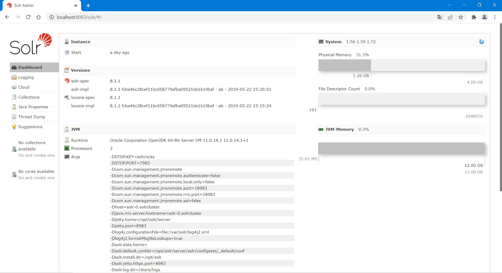
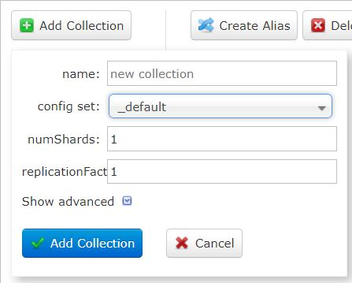
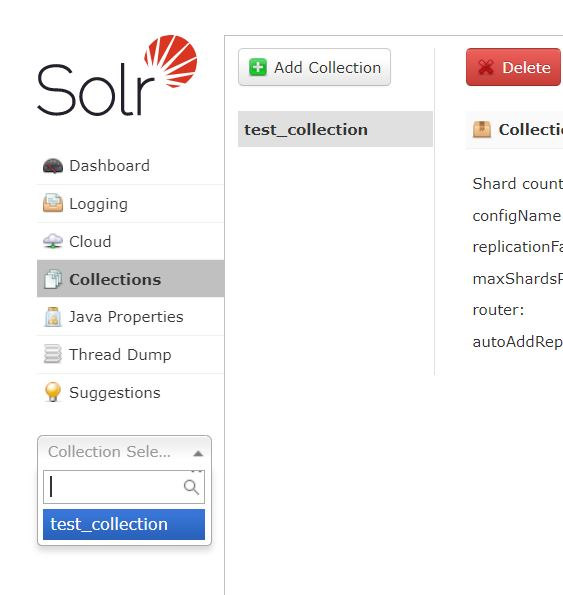
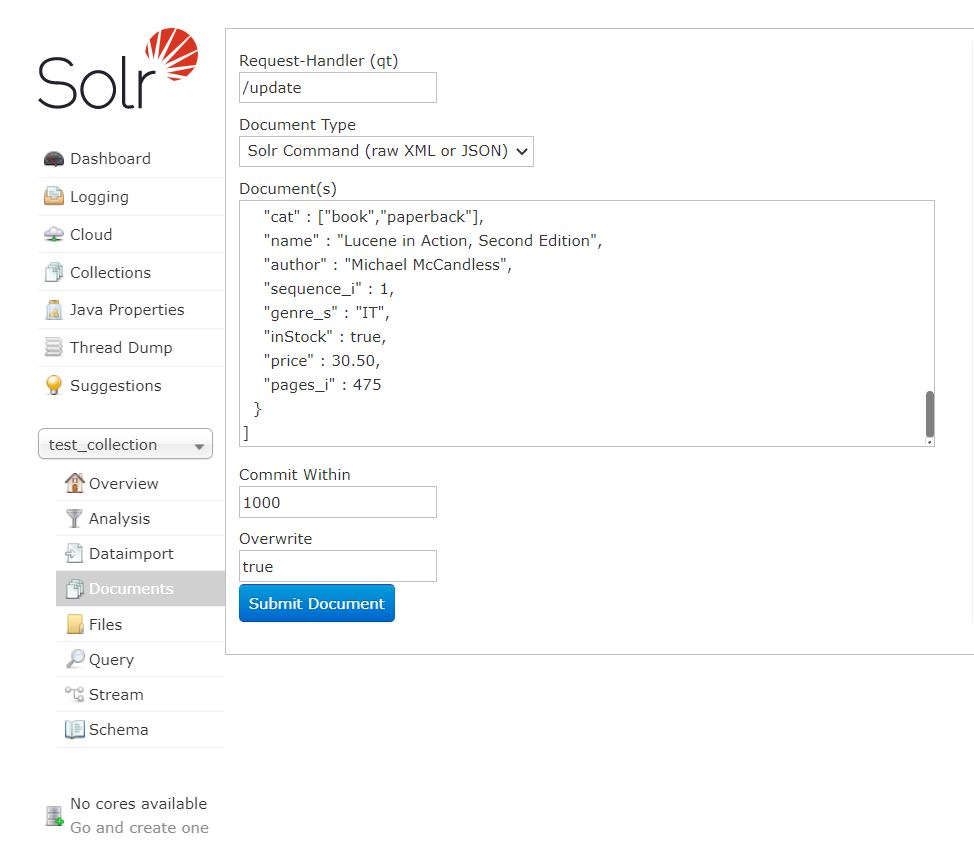
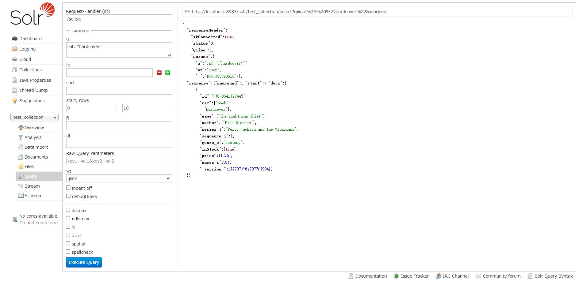

Edge Conductor / Tutorials / Sample Applications / Web Indexing Application
Web Indexing Application
In this tutorial we will create a web indexing backend and deploy the service using edge conductor experience kit.
This example contains how to deploy Apache SolrCloud with Edge Conductor. Apache Solr is an open enterprise search engine based on Apache Lucene Learn more at solr.apache.org. Apache Solr also relies on Zookeeper to manage the overall structure so that both indexing and search requests can be routed properly.
Apache ZooKeeper is a centralized service for maintaining configuration information, naming, providing distributed synchronization, and providing group services.
Learn more at zookeeper.apache.org
This sample app requires a cluster with network access. Storage also must be configured for the index created. Users can try this out on the kind cluster Edge Conductor provisioned.
In this tutorial, we deploy one replica of Solr and one ZooKeeper instance and use a local-path storage class which is the default for kind.
Contents
Prerequisites
Make sure your host meets the requirements in Before You Begin.
Follow the steps in Build and Install the Tool.
Follow the steps in Build and Deploy Kind Cluster to deploy a kind cluster and configure the kubectl command-line tool to communicate with your cluster.
Follow HW Requirements for Edge Conductor Day-0 Host and OS and System Requirements for Edge Conductor Day-0 Host to prepare the Day-0 host hardware and software.
NOTE: For each kind node, 2 CPU cores and 2 gigabytes (GB) memory are the minimum required.
Follow
Download and Build Edge Conductor Code (Internal users
only)
to build and install Edge Conductor tool.
Enter _workspace folder to run Edge Conductor tool.
edge-conductor$ cd _workspace
edge-conductor/_workspace$
Prepare an Edge Conductor Kit to Deploy web indexing service based on kind Cluster
This document guides to the user to prepare an Edge Conductor Kit that deploys a service on a kind cluster.
This document uses three kinds of YAML files:
Edge Conductor Kit configure file kit.yml: the file passed to the conductor tool directly
Component Manifest file manifest.yml: define the component’s attribute
Service Deployment files: define the way to deploy the service to the kind cluster
The following sections explains how the three files co-work as an Edge Conductor Kit to provide a “web-indexing” service on the kind cluster.
Edge Conductor Kit Config File
This file is the top level file of Edge Conductor Kit which will be passed to the conductor tool as configuration of target cluster and software component. Refer to kit.yml for the detail.
Use:
- kit/kind.yml
Parameters:
customconfig:
registry:
password: "123456"
Components:
manifests:
- "config/manifests/component_manifest.yml"
- "config/sample_web_indexing/manifest.yml"
selector:
- name: web-indexing
In this example:
It imports
kind.yml, which is the official Kit for kind cluster.It imports
config/sample_web_indexing/manifest.ymlas the supplemented manifest of the component manifest file to provide the configuration of the sample_web_indexing service. The below section Component Manifest gives the detailed information for this supplemented manifest YAML file.It selects the
sample_web_indexingas the component to be deployed on the kind cluster.
Component Manifest
Edge Conductor has a default component manifest file, which contains all default components supported by Edge Conductor. Customers can write a supplement component manifest file. This example provides the supplement manifest in manifest.yml. Detailed definition of components refer to Edge Conductor Configuration components section.
Components:
- name: web-indexing
url: file://{{ .Workspace }}/config/sample_web_indexing/web-indexing.yml
type: yaml
images:
- gcr.io/google_samples/k8szk:v1
- solr:8.1.1
- busybox
supported-clusters:
- kind
namespace: hello-cluster
In this sample:
It defines the component’s name as “web-indexing”.
It uses the
web-indexing.ymlfile as the deployment YAML file. Refer to section Deployment File.It provides offline deployment capability with the list of image URLs under the “images” section.
It requests the service to be deployed based on kind cluster.
Deployment File
The deployment file in this Kit example describes a desired status in a Deployment by the kubectl command. The format of this YAML file should follow the definition of the Kubernetes deployment file.
Deploy web-indexing Service based on the Edge Conductor Kit
After all the above steps are completed, we can deploy the service based on the created web-indexing Edge Conductor Kit. The following steps deploy a web-indexing service based on the Edge Conductor Kit created above.
Init Edge Conductor Environment
Run the “init” command with the web-indexing kit config file to initialize the Edge Conductor environment.
edge-conductor/_workspace$ ./conductor init -c ./config/sample_web_indexing/kit.yml
Build and Deploy kind Cluster
Run the following commands to build and deploy kind cluster.
edge-conductor/_workspace$ ./conductor cluster build
edge-conductor/_workspace$ ./conductor cluster deploy
Check the kind Cluster
Install the kubectl tool (v1.20.0 or above) to interact with the target cluster.
kubectl get nodes
You will see output similar to:
NAME STATUS ROLES AGE VERSION
kind-control-plane Ready control-plane,master 19h v1.23.4
kind-worker Ready <none> 19h v1.23.4
Build and Deploy web-indexing Service
To build and deploy the services, enter the commands:
edge-conductor/_workspace$ ./conductor service build
edge-conductor/_workspace$ ./conductor service deploy
Run the following commands to list the pods that are running the web-indexing application:
edge-conductor/_workspace$ kubectl get pods -n web-indexing --output=wide
You will see output similar to:
NAME READY STATUS RESTARTS AGE IP NODE NOMINATED NODE READINESS GATES
web-indexing-solr-0 1/1 Running 0 4m7s 10.244.1.70 kind-worker <none> <none>
web-indexing-zookeeper-0 1/1 Running 0 4m7s 10.244.1.69 kind-worker <none> <none>
Access the Application
(For Kind) Use port-forward to access the Apache Solr application
Run the following command:
kubectl port-forward -n web-indexing svc/solr-service 8983:8983
You will see output similar to:
Forwarding from 127.0.0.1:8983 -> 8983
Forwarding from [::1]:8983 -> 8983
Access http://localhost:8983 in your web browser now.
wget http://localhost:8983
What’s Next
Congratulations! You have deployed Apache Solr. Now you can try to use this search engine.
First, Go to to the Solr Cloud Administration UI at http://localhost:8983:

From the left sidebar, select Collections, you can see the Collections panel.
Now create a collection by clicking on Add Collection.

Modify the name of the new collection, for example, in this tutorial we name it test_collection.
And then choose the _default config set.
Then click Add Collection.

After test_conllection is created, select the test_collection from the Collection Selector dropdown in the left sidebar. We can now do more configuration.

In the left sidebar under test_collection, click on Documents and choose the Document Type Solr Command (raw XML or JSON), we can see the detailed Solr Command content in the Document(s).

Delete the original content of Solr Command, copy the following JSON code and paste into the Document(s).
Then click Submit Document.
[
{
"id" : "978-0641723445",
"cat" : ["book","hardcover"],
"name" : "The Lightning Thief",
"author" : "Rick Riordan",
"series_t" : "Percy Jackson and the Olympians",
"sequence_i" : 1,
"genre_s" : "fantasy",
"inStock" : true,
"price" : 12.50,
"pages_i" : 384
}
,
{
"id" : "978-1423103349",
"cat" : ["book","paperback"],
"name" : "The Sea of Monsters",
"author" : "Rick Riordan",
"series_t" : "Percy Jackson and the Olympians",
"sequence_i" : 2,
"genre_s" : "fantasy",
"inStock" : true,
"price" : 6.49,
"pages_i" : 304
}
,
{
"id" : "978-1857995879",
"cat" : ["book","paperback"],
"name" : "Sophie's World : The Greek Philosophers",
"author" : "Jostein Gaarder",
"sequence_i" : 1,
"genre_s" : "fantasy",
"inStock" : true,
"price" : 3.07,
"pages_i" : 64
}
,
{
"id" : "978-1933988177",
"cat" : ["book","paperback"],
"name" : "Lucene in Action, Second Edition",
"author" : "Michael McCandless",
"sequence_i" : 1,
"genre_s" : "IT",
"inStock" : true,
"price" : 30.50,
"pages_i" : 475
}
]
If the data is successfully submitted, you will see output similar to the following:
{
"responseHeader": {
"rf": 1,
"status": 0,
"QTime": 610
}
}
Now you can go to the Query tab (select from the left sidebar under test_collection) and search for hardcover books. Copy the query
cat: "hardcover" into the input box q and select json from dropbox wt, then
click on Execute Query. Upon success, you will see output similar to the following:

To learn more, please go to the Apache Solr documentation and Solr Query Syntax.
—–
Previous Tutorial: Hello Cluster! Helm
Back to: Sample Applications
Copyright (C) 2022 Intel Corporation
SPDX-License-Identifier: Apache-2.0